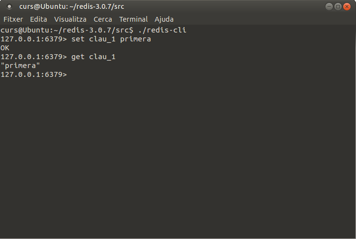
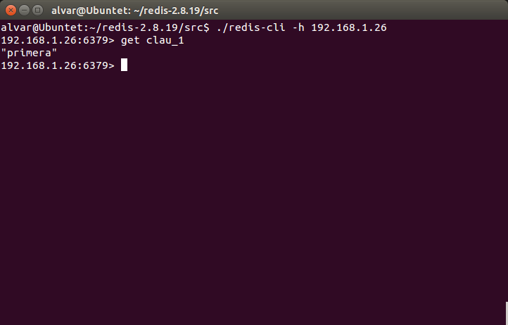

2.1 - Instal·lació de Redis
Redis està construït per a Linux. També funciona, però, des de Windows com veurem una miqueta més avant.
Instal·lació en Linux
El lloc des d'on baixar-lo és la pàgina oficial:
En el moment de fer aquestos apunts, l'última versió estable és la 6.2.6.
Ens baixem el fitxer, el descomprimim, i després des d'una terminal ens situem en el directori on s'ha descomprimit i fem make per a generar els executables. Després de molts avisos, s'hauria d'haver instal·lat bé, i sense ser necessaris els permisos d'administrador. Aquest seria el resum d'accions, fetes totes elles des d'una terminal (però no cal descomprimir des d'una terminal) i havent-nos situat prèviament en el lloc on està el fitxer baixat. També suposarem que el fitxer està col·locat en el lloc on volem que estiga instal·lat de forma definitiva. Recordeu que podeu descomprimir-lo de la manera que us resulte més còmoda:
tar xzf redis-6.2.6.tar.gz
o també el podeu descomprimir des del navegador d'arxius, com ja havíem comentat.
Una vegada descomprimit, des d'una terminal ens hem de situar en el directori acabat de descomprimir i fer make
cd redis-6.2.6
make
Amb açò s'haurien d'haver generat els executables, i ja hauria de funcionar. Recordeu que no fan falta permisos d'administrador per a realitzar açò.
Per a posar en marxa el servidor, quasi que el més còmode serà obrir un terminal, situar-nos en el directori redis-6.2.6/src i des d'ahi executar redis-server. Hauria d'eixir una finestra similar a la següent, amb més o menys avisos (observeu que al principi de la imatge estan les ordres donades).

Entre altres coses diu que el servidor està en marxa esperant connexions al port 6379, que és el port per defecte de Redis. Aquesta finestra del terminal l'haurem de deixar en marxa. Quan vulguem detenir Redis, senzillament fem ctrl-c, i detindrem l'execució de forma ordenada (guardant-se les dades no guardades i tancant-se tot bé)
Podríem haver executat directament redis-server fent-li doble-clic des d'un explorador d'arxius, per exemple, però aleshores no podríem parar-lo i en definitiva controlar-lo tan còmodament.
Per a fer una connexió des d'un client, també des d'un terminal (un altre) executem redis-cli:
Ja ha fet la connexió, concretament a localhost (127.0.0.1) i al port 6379, que havíem quedat que és el port per defecte.
Comprovem que sí que funciona. Encara no hi ha dades, perquè l'acabem d'instal·lar. I recordeu que és una Base de Dades clau-valor. Per a crear una entrada posarem set clau valor. Per a obtenir-la posarem get clau. En la imatge es pot comprovar:

Hem creat una clau anomenada clau_1 amb el valor primera, com es pot comprovar en el moment d'obtenir-la amb get.
Si al programa redis-cli no li posem paràmetres, intentarà fer una connexió local (localhost). Si volem connectar a un servidor situat en una altra adreça, li la posem amb el paràmetre -h adreça, per exemple:
redis-cli -h 192.168.1.26
Ací tenim una imatge des d'una connexió externa, des d'un altre equip:

Nota: Connexió al servidor de l'Institut
En el servidor de dades de l'Institut també tenim instal·lat redis. Però per a no tenir accessos no desitjats, cal una autenticació. Senzillament és posar el comando auth amb la contrasenya: auth ieselcaminas.ad
En la següent imatge es veu com sí que hem pogut connectar

Instal·lació en Windows de 64 bits
Encara que Redis està construït per a Linux, hi ha versions per a Windows, preferiblement de 64 bits. També podrem trobar versions de 32 bits, però molt més antigues.
El lloc on poder baixar els fitxers de Redis per a Windows de 64 bits és:
https://github.com/MSOpenTech/redis/releases
Ens baixem el zip, el descomprimim, i ja ho tindrem disponible (sense fer make ni res). Observeu com en la carpeta resultat de descomprimir ja tenim els executables redis-server i redis-cli que són els que ens interessen:
Executem redis-server directament i ja el tindrem en marxa:
Executem també el redis-cli i el resultat serà el mateix que en Linux. Hem incorporar una nova clau i després obtenim el seu contingut:
Instal·lació en Windows de 32 bits
És un poc més complicada de trobar. I sobretot, és una versió prou més antiga. Podem descarregar-la de la següent adreça:
https://github.com/rgl/redis/downloads
Aquesta sí que és d'instal·lació (no de descompressió únicament). La documentació suggereix que s'active com un servei. Per això, en la llista de programes de l'Inici no està el server, únicament el client. Però el podem trobar en el directori on s'ha instal·lat: C:\Archivos de programa\Redis. Trobarem tant redis-server.exe com redis-cli.exe. Posem en marxa el servidor fent doble-clic a redis-server.exe:
I ja només falta posar en marxa el client (des del menú o fent doble-clic a redis-cli.exe). En la imatge es veu com podem connectar, crear una clau i tornar el seu valor:
Llicenciat sota la Llicència Creative Commons Reconeixement SenseObraDerivada 4.0